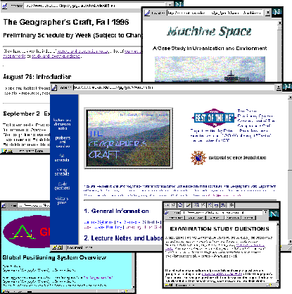

Figure 1. The homepage of the Geographer's Craft Project showing links to some of its major sections. All of the course materials, including lecture and discussion notes, exam review questions, class exercises and problems, syllabus, and final class projects can be accessed from this page.

Return to the Visitor's Information page.